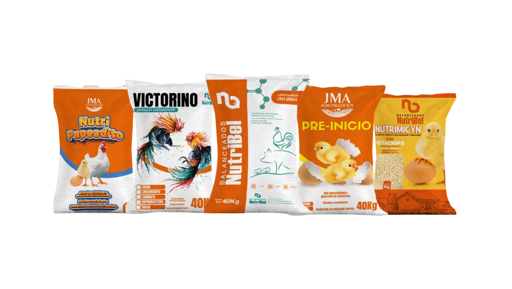
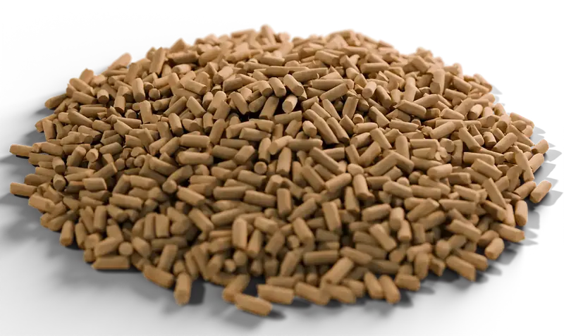
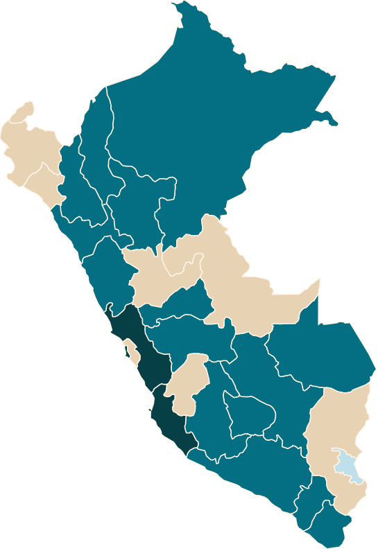

¿No sabes cuál elegir?
- Cuéntanos qué crías y en qué etapa está.
- Te recomendamos la fórmula y el programa.
Alimentos por especie
Escríbenos por WhatsAppFórmulas por especie y por etapa, con el análisis garantizado a la vista. Elige qué crías y te mostramos su programa de alimentación.
Nacimos en 2014 para cerrar la brecha técnica del campo peruano. No vendemos el saco y desaparecemos: vamos a tu granja, medimos cómo responde el lote y ajustamos la alimentación contigo hasta que los números cuadren.
Nuestra historiaCómo se hace un saco NutriBel
Cinco pasos entre nuestra planta y el comedero de tus animales.
Maíz, torta de soya Hi Pro y subproducto de trigo: la base que declara nuestro catálogo, con vitaminas y minerales.
Formulamos por especie y por etapa, con el análisis garantizado a la vista.
Los insumos se muelen y se mezclan según la fórmula de cada alimento.
Harina, micropellet, crumble o pellet, según lo que pide cada especie y etapa.
Desde nuestra planta en Grocio Prado, Chincha, el alimento sale ensacado hacia tu zona.
Y tu asesor vuelve a medir cómo responde el lote.
Elige el alimento de tu etapa
Cada especie y cada etapa tiene su alimento, con el análisis garantizado a la vista.
Un asesor técnico vuelve a tu granja a medir cómo respondió el lote.
Fabricamos y despachamos desde nuestra planta a las principales zonas productoras.
Cada crianza es distinta: desde elegir el alimento correcto hasta saber cuánto pedir y que nunca te falte. Empieza por donde lo necesites.


40kg
Del primer día a la etapa productiva: una fórmula pensada para lo que tu animal necesita en cada momento.
Línea Granja · Pollos
Día 29 hasta la saca
Saco de 40 kg
Proteína mín.16 %
Nutripapeadito · Pollos
Día 43 hasta el beneficio
Saco de 30 kg
Proteína mín.18 %
Guías prácticas para alimentar mejor, cuidar el alimento y planificar tu pedido.
Lo que más nos preguntan criadores y distribuidores. ¿No está tu duda? Escríbenos.
Añade los alimentos a Mi pedido y envíalo por WhatsApp, o escríbenos directamente al +51 983 548 687. Un asesor te confirma precio, stock y fecha de entrega para tu zona.
Atendemos 17 regiones y el Callao desde nuestra planta en Chincha. Revisa tu región y la frecuencia de envío en Dónde comprar.
Un asesor visita tu granja, revisa consumo y crecimiento, señala qué está fallando, ajusta la alimentación contigo y vuelve para medir el resultado. El alcance y la frecuencia se coordinan según tu zona.
Hazlo de forma gradual: mezcla el alimento nuevo con el anterior durante varios días, aumentando poco a poco la proporción del nuevo. Te lo explicamos paso a paso en esta guía.
En un lugar seco, fresco y ventilado, sobre parihuelas y separados de las paredes, lejos de roedores y productos químicos. Usa primero los sacos más antiguos.
Cada ficha muestra el análisis garantizado: proteína, grasa, fibra, humedad y más. La etiqueta del saco es la referencia oficial de cada lote.
Sí. Si tienes una agroveterinaria, tienda o distribuidora, escríbenos desde esta sección y te contacta el equipo comercial.